To-Do with Alerts
"To-Do with Alerts"
Todo list app with alerts,
recurring tasks, actions
and live tiles.
App Info
- Get organized with this effective and intuitive Todo list app. You can set reminders/alerts for each todo.
- This effective todo list lets you keep track of everything you need to do and alerts you on set reminders.
Finally a task app with recurring tasks, plus the alerts actually work. Thank you.
mrtlwilliams
- 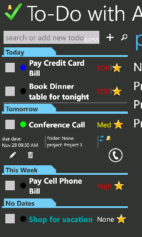
- 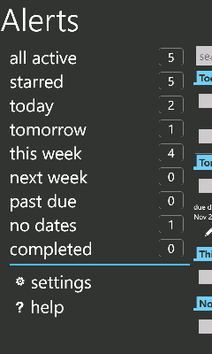
- 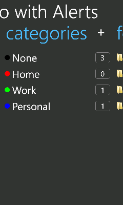
- 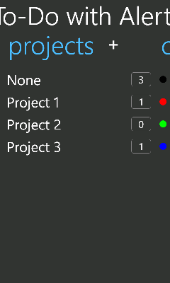
- 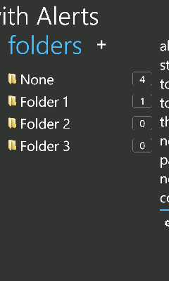
- 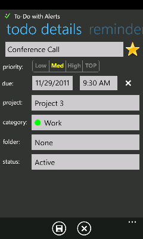
- 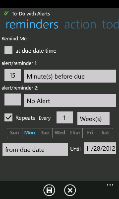
- 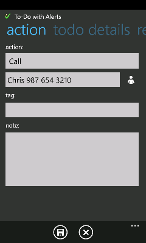
- 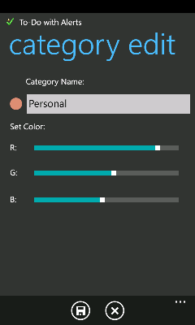
- 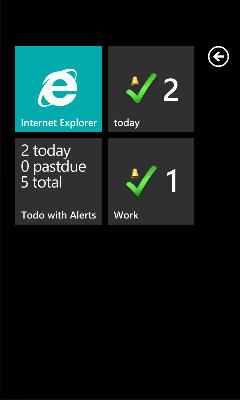
- 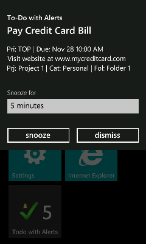
Free App
To-Do with Alerts - Paid
Ad Free App
To-Do with Alerts - Free
Features
- Organize todo's/tasks into Project, Folders and Colored Categories.
- Add reminders and alerts to your todo. (Minutes, Hours, Days, Weeks before due date)
- Assign actions like Email, Text, Call and Visit Website to todo and easily launch action from todo list.
- Launch action from alert/reminder shown.
- Search for tasks/todo's.
- Sort todo's by Due Date, Priority, Title, Starred and Last Modified.
- Define when your todo is repeated. (Daily, Weekly, Monthly, Yearly)
- Organize your tasks/todo in categories; prioritize, and filter them.
- Live Tiles for Category, Folder, Project and Filters like Today, Tomorrow, This Week etc. Multiple Live Tiles can be set on Home Screen.
- Quickly add todo from main page.